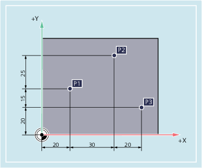

In production drawings, the dimensions often do not refer to a zero point, but rather to another workpiece point. So that these dimensions do not have to be converted, they can be specified in incremental dimensions. In this method of dimensional notation, a position specification refers to the previous point.
Applied to tool movement this means:
The incremental dimensions describe the distance the tool is to travel.
In incremental dimensions, the following position specifications are obtained for points P2 to P4:
Position | Position specification in incremental dimensions | The specification refers to: |
|---|---|---|
P2 | X15 Z-7.5 | P1 |
P3 | Z-10 | P2 |
P4 | X20 Z-10 | P3 |
| Note |
With DIAMOF or DIAM90 active, the set distance in incremental dimensions (G91) is programmed as a radius dimension. |
The position specifications for points P1 to P3 in incremental dimensions are:
In incremental dimensions, the following position specifications are obtained for points P1 to P3:
Position | Position specification in incremental dimensions | The specification refers to: |
|---|---|---|
P1 | X20 Y35 | Zero point |
P2 | X30 Y20 | P1 |
P3 | X20 Y-35 | P2 |
See also:
Dimensions